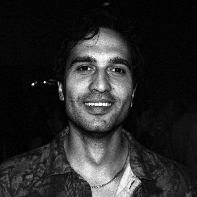

Hi, I'm Fran.
I'm a research scientist at Salient Predictions, where I build AI models for weather forecasting. Most recently, my colleagues and I built GEM-2, a global weather model that jointly models the atmospheric state and the decision-relevant variables that depend on the weather. It outperforms all operational physics-based Numerical Weather Prediction (NWP) systems and the vast majority of AI weather models at 0.25° resolution, and trains in ~19 H100-days, a tiny fraction of the compute of comparable AI models.
Before weather forecasting, I did a PhD in astrophysics at the University of St Andrews, working on Bayesian inference for astronomical time series. I characterized the exoplanets and black holes behind gravitational microlensing events, and developed methods for reconstructing surface maps of planets and moons from their brightness variations. During the PhD I also spent six months in David Hogg's Astronomical Data group at the Flatiron Institute in New York, alongside Rodrigo Luger and Dan Foreman-Mackey, and another six months at the climate-risk startup Cervest in London.
I grew up in Croatia. Outside of work I like reading, cooking, photography, techno music, and walking around NYC.